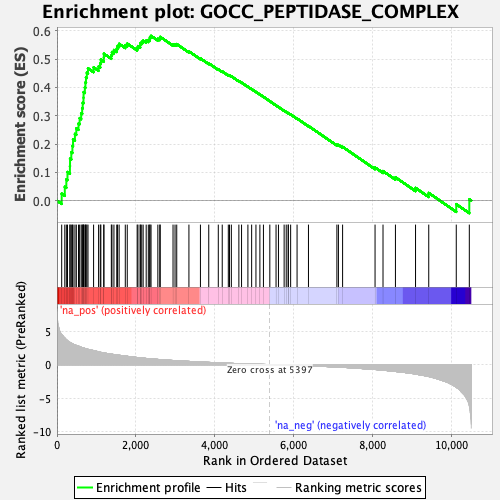
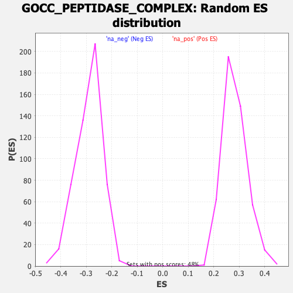

| Dataset | qlf.KOd4vsWTd4_gsea_score |
| Phenotype | NoPhenotypeAvailable |
| Upregulated in class | na_pos |
| GeneSet | GOCC_PEPTIDASE_COMPLEX |
| Enrichment Score (ES) | 0.58242244 |
| Normalized Enrichment Score (NES) | 2.068316 |
| Nominal p-value | 0.0 |
| FDR q-value | 1.6326796E-4 |
| FWER p-Value | 0.016 |

| SYMBOL | RANK IN GENE LIST | RANK METRIC SCORE | RUNNING ES | CORE ENRICHMENT | |
|---|---|---|---|---|---|
| 1 | PSME2 | 119 | 4.475 | 0.0246 | Yes |
| 2 | UCHL5 | 198 | 3.946 | 0.0489 | Yes |
| 3 | PSME3 | 237 | 3.723 | 0.0753 | Yes |
| 4 | TXNL1 | 266 | 3.546 | 0.1012 | Yes |
| 5 | PSMD7 | 328 | 3.306 | 0.1220 | Yes |
| 6 | PSMC6 | 331 | 3.298 | 0.1483 | Yes |
| 7 | USP14 | 363 | 3.206 | 0.1712 | Yes |
| 8 | PSMA4 | 391 | 3.099 | 0.1936 | Yes |
| 9 | PSMB6 | 407 | 3.060 | 0.2168 | Yes |
| 10 | PSMD5 | 455 | 2.930 | 0.2359 | Yes |
| 11 | SEC11C | 490 | 2.850 | 0.2556 | Yes |
| 12 | PSMA3 | 546 | 2.766 | 0.2726 | Yes |
| 13 | PSMA5 | 574 | 2.679 | 0.2916 | Yes |
| 14 | PSMB7 | 613 | 2.588 | 0.3088 | Yes |
| 15 | PSME1 | 639 | 2.522 | 0.3267 | Yes |
| 16 | PSMA7 | 652 | 2.508 | 0.3458 | Yes |
| 17 | PSMD11 | 672 | 2.468 | 0.3638 | Yes |
| 18 | PSMD6 | 674 | 2.462 | 0.3836 | Yes |
| 19 | PSMD12 | 707 | 2.413 | 0.3999 | Yes |
| 20 | PSMB2 | 721 | 2.370 | 0.4178 | Yes |
| 21 | TADA1 | 735 | 2.352 | 0.4355 | Yes |
| 22 | PSMB8 | 757 | 2.318 | 0.4521 | Yes |
| 23 | UBE3C | 786 | 2.272 | 0.4678 | Yes |
| 24 | KAT2A | 928 | 2.095 | 0.4711 | Yes |
| 25 | PSMA2 | 1055 | 1.897 | 0.4743 | Yes |
| 26 | PSMA1 | 1097 | 1.836 | 0.4852 | Yes |
| 27 | PSMD1 | 1112 | 1.821 | 0.4985 | Yes |
| 28 | PSMC5 | 1187 | 1.745 | 0.5055 | Yes |
| 29 | HTRA2 | 1189 | 1.742 | 0.5194 | Yes |
| 30 | PSME4 | 1378 | 1.559 | 0.5139 | Yes |
| 31 | ENY2 | 1394 | 1.548 | 0.5249 | Yes |
| 32 | UBE3A | 1444 | 1.499 | 0.5323 | Yes |
| 33 | TAF9 | 1516 | 1.442 | 0.5371 | Yes |
| 34 | PSMC1 | 1536 | 1.424 | 0.5468 | Yes |
| 35 | PSMB3 | 1576 | 1.393 | 0.5542 | Yes |
| 36 | GPAA1 | 1732 | 1.278 | 0.5497 | Yes |
| 37 | PSMD3 | 1782 | 1.243 | 0.5550 | Yes |
| 38 | PSMD14 | 2033 | 1.053 | 0.5395 | Yes |
| 39 | PSMC4 | 2053 | 1.040 | 0.5460 | Yes |
| 40 | PIGU | 2110 | 1.005 | 0.5487 | Yes |
| 41 | PIDD1 | 2113 | 1.003 | 0.5566 | Yes |
| 42 | PSMB5 | 2149 | 0.986 | 0.5612 | Yes |
| 43 | PSMC2 | 2185 | 0.966 | 0.5656 | Yes |
| 44 | TADA2A | 2262 | 0.917 | 0.5657 | Yes |
| 45 | PSMA6 | 2316 | 0.888 | 0.5678 | Yes |
| 46 | SPCS2 | 2353 | 0.871 | 0.5714 | Yes |
| 47 | SPCS3 | 2357 | 0.869 | 0.5781 | Yes |
| 48 | TAF6L | 2385 | 0.859 | 0.5824 | Yes |
| 49 | PSMB9 | 2558 | 0.772 | 0.5721 | No |
| 50 | ADRM1 | 2607 | 0.755 | 0.5736 | No |
| 51 | RAD23B | 2618 | 0.753 | 0.5787 | No |
| 52 | VCP | 2943 | 0.615 | 0.5526 | No |
| 53 | PSMD2 | 2994 | 0.599 | 0.5526 | No |
| 54 | PSMB10 | 3037 | 0.584 | 0.5533 | No |
| 55 | PSMB4 | 3346 | 0.477 | 0.5276 | No |
| 56 | TAF12 | 3638 | 0.386 | 0.5028 | No |
| 57 | PSMD4 | 3849 | 0.331 | 0.4853 | No |
| 58 | PSMB1 | 4091 | 0.266 | 0.4643 | No |
| 59 | USP22 | 4191 | 0.244 | 0.4567 | No |
| 60 | TADA3 | 4345 | 0.209 | 0.4437 | No |
| 61 | PSMD13 | 4375 | 0.200 | 0.4426 | No |
| 62 | AFG3L2 | 4422 | 0.187 | 0.4397 | No |
| 63 | RAD23A | 4613 | 0.142 | 0.4226 | No |
| 64 | TAF5L | 4681 | 0.128 | 0.4172 | No |
| 65 | PSMF1 | 4842 | 0.098 | 0.4026 | No |
| 66 | PIGS | 4937 | 0.082 | 0.3942 | No |
| 67 | PIGK | 5046 | 0.061 | 0.3844 | No |
| 68 | SEC11A | 5146 | 0.044 | 0.3752 | No |
| 69 | TRRAP | 5236 | 0.030 | 0.3669 | No |
| 70 | TAF6 | 5398 | -0.000 | 0.3515 | No |
| 71 | PSMD10 | 5556 | -0.024 | 0.3366 | No |
| 72 | PSMC3 | 5617 | -0.035 | 0.3311 | No |
| 73 | UBQLN1 | 5761 | -0.058 | 0.3179 | No |
| 74 | CASP9 | 5814 | -0.066 | 0.3134 | No |
| 75 | PIGT | 5865 | -0.073 | 0.3092 | No |
| 76 | PSMD9 | 5866 | -0.073 | 0.3098 | No |
| 77 | ZFAND2A | 5926 | -0.084 | 0.3048 | No |
| 78 | TAF10 | 6089 | -0.113 | 0.2902 | No |
| 79 | SPG7 | 6378 | -0.172 | 0.2639 | No |
| 80 | CRADD | 7099 | -0.357 | 0.1977 | No |
| 81 | UBR1 | 7138 | -0.368 | 0.1970 | No |
| 82 | PSMD8 | 7244 | -0.397 | 0.1901 | No |
| 83 | SPCS1 | 8067 | -0.722 | 0.1171 | No |
| 84 | KAT2B | 8269 | -0.826 | 0.1044 | No |
| 85 | ATXN7L3 | 8584 | -1.019 | 0.0825 | No |
| 86 | CAPNS1 | 9094 | -1.401 | 0.0450 | No |
| 87 | CASP2 | 9429 | -1.776 | 0.0272 | No |
| 88 | SUPT7L | 10127 | -3.374 | -0.0125 | No |
| 89 | CAPN2 | 10458 | -6.077 | 0.0048 | No |
